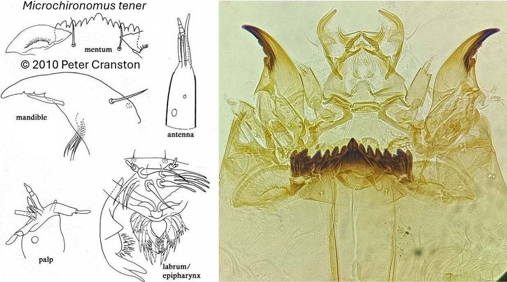

Microchironomus (Kieffer, 1918)

Antennes
Antennes avec 5 segments. Le segment de base est de taille égale au flagelle. Segments 2 et 3 de même taille.
Mandibules
Pas de dent dorsale. Dent apicale aussi longue que les 2 dents internes combinées.
Mentum
Dent médiane trifide avec partie centrale parfois entaillée latéralement. 6 paires de dents latérales. Les plaques ventromentales sont plus étroites que le mentum.
Labre
SI et SII en forme de lame de même taille (ou SII légèrement plus longue). Peigne de l’épipharynx est composé d’une seule plaque (ou 3 lobes).
Prémandibules
Prémandibules avec 2 dents.
Ecologie
Les larves sont présentes dans les zones profondes des lacs chauds meso- à eutrophes.
Espèces recensées en France
2 : M. deribae, M. tener.